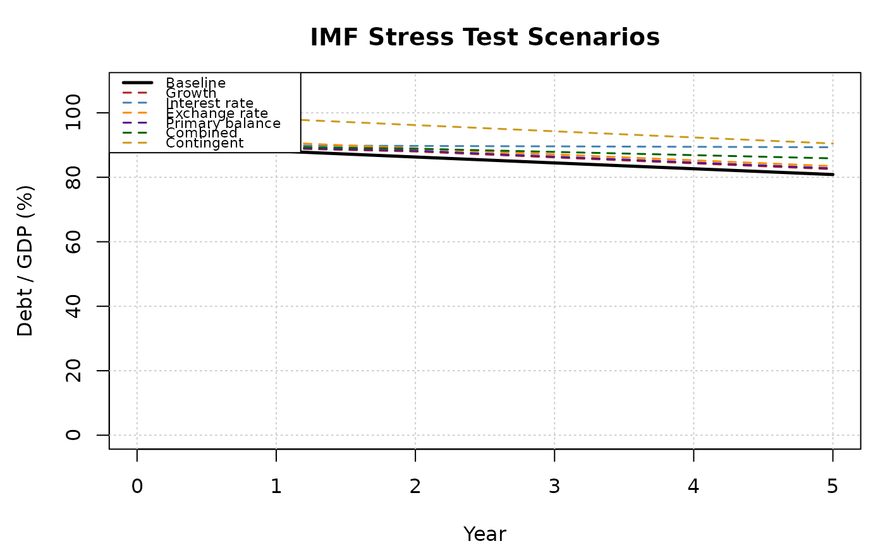

Applies six standardised IMF stress-test scenarios to a baseline debt projection using the debt dynamics equation:
Usage
dk_stress_test(
debt,
interest_rate,
gdp_growth,
primary_balance,
horizon = 5,
growth_shock = -0.01,
interest_shock = 0.02,
exchange_shock = 0.15,
fx_share = 0,
pb_shock = -0.01,
contingent_shock = 0.1,
calibrate = NULL
)Arguments
- debt
Numeric scalar. Initial debt-to-GDP ratio.
- interest_rate
Numeric scalar or vector of length
horizon. Baseline nominal effective interest rate.- gdp_growth
Numeric scalar or vector of length
horizon. Baseline nominal GDP growth rate.- primary_balance
Numeric scalar or vector of length
horizon. Baseline primary balance as a share of GDP (positive = surplus).- horizon
Integer scalar. Projection horizon in years. Default
5.- growth_shock
Numeric scalar. Percentage-point reduction in GDP growth applied in the first two years. Default
-0.01(1 pp lower growth).- interest_shock
Numeric scalar. Percentage-point increase in the interest rate. Default
0.02(200 basis points).- exchange_shock
Numeric scalar. Depreciation fraction applied to foreign-currency debt. Default
0.15(15 per cent depreciation).Numeric scalar. Share of debt denominated in foreign currency. Default
0.- pb_shock
Numeric scalar. Percentage-point deterioration in primary balance in the first two years. Default
-0.01.- contingent_shock
Numeric scalar. One-off increase in debt-to-GDP from contingent liabilities materialising. Default
0.10.- calibrate
Optional named list for data-driven shock calibration. Should contain numeric vectors
gdp_growth_hist,interest_rate_hist, andprimary_balance_hist. When provided, shock sizes are computed as one standard deviation of each historical series, replacing the fixed defaults. WhenNULL(default), the fixed defaults are used.
Value
An S3 object of class dk_stress containing:
- scenarios
A
data.framewith columnsyear,baseline,growth,interest_rate,exchange_rate,primary_balance,combined, andcontingent.- terminal
Named numeric vector of terminal debt-to-GDP under each scenario.
- inputs
A list storing all input parameters.
Details
$$d_{t+1} = \frac{1 + r_t}{1 + g_t} d_t - pb_t + sfa_t$$
The six scenarios are:
Growth shock: GDP growth reduced by
growth_shockfor the first two years.Interest rate shock: interest rate increased by
interest_shockfor the full horizon.Exchange rate shock: debt increases by
debt * fx_share * exchange_shockin year 1 (one-off stock-flow adjustment from currency depreciation).Primary balance shock: primary balance reduced by
pb_shockfor the first two years.Combined shock: simultaneous growth shock of
growth_shock / 2and interest rate shock ofinterest_shock / 2.Contingent liabilities: one-off debt increase of
contingent_shockin year 1.
References
International Monetary Fund (2013). Staff Guidance Note for Public Debt Sustainability Analysis in Market-Access Countries. IMF Policy Paper.
International Monetary Fund (2022). Staff Guidance Note on the Sovereign Risk and Debt Sustainability Framework for Market Access Countries. IMF Policy Paper.
Examples
st <- dk_stress_test(
debt = 0.90,
interest_rate = 0.03,
gdp_growth = 0.04,
primary_balance = 0.01,
fx_share = 0.20
)
st
#>
#> ── IMF Stress Test Scenarios ───────────────────────────────────────────────────
#> • Horizon: 5 years
#> • Initial debt/GDP: 90%
#>
#> Terminal debt/GDP by scenario:
#>
#> Scenario Terminal Diff
#> Baseline 80.9% 0 pp
#> Growth shock 82.5% 1.7 pp
#> Interest rate shock 89.3% 8.5 pp
#> Exchange rate shock 83.4% 2.6 pp
#> Primary balance shock 82.8% 1.9 pp
#> Combined shock 85.9% 5 pp
#> Contingent liabilities 90.5% 9.6 pp
plot(st)
